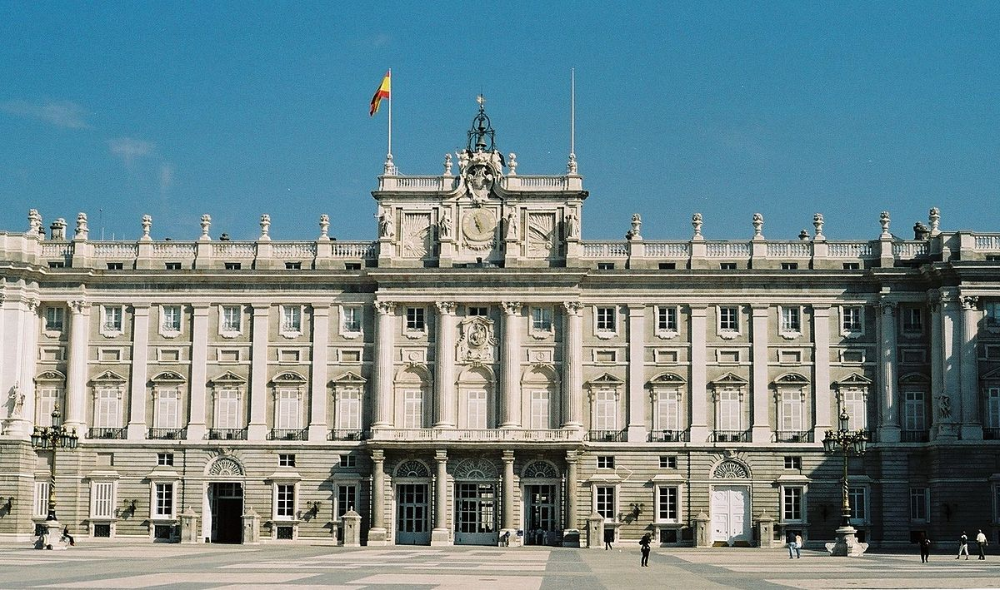
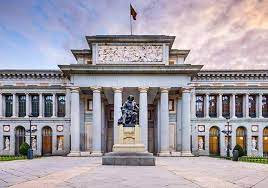
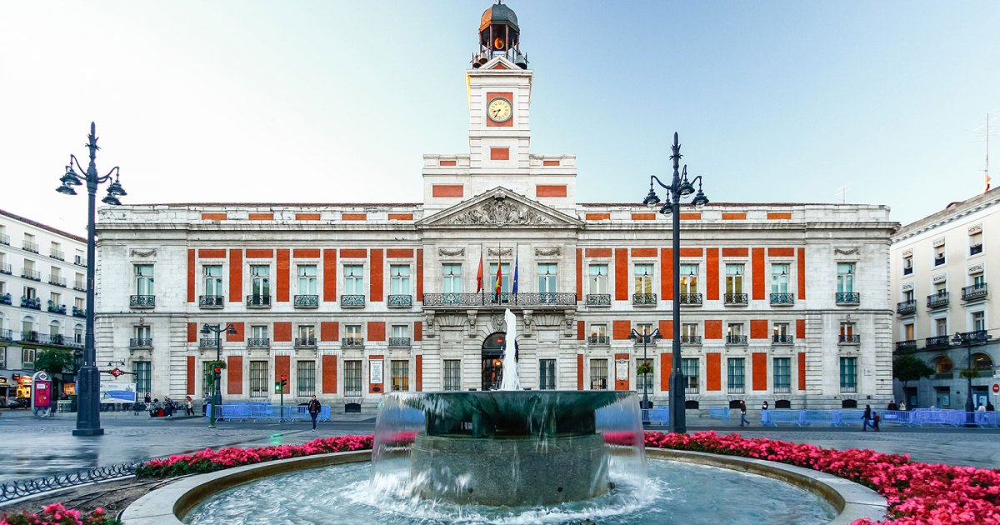

Madrid est fondée par l'émir Muhammad Ier à la fin du IXéme siècle, en 1047 elle est échangée au Roi de Tolède par Ferdinand Ier de Castille qui vient de la conquérir. En 1085, Alphonse VI prend la ville de Tolède, Madrid entre dans le royaume de Castille. ... En 1217, François d'Assise fonde un monastère à Madrid.
Le palais royal de Madrid (Palacio Real de Madrid) est la résidence officielle du roi d'Espagne. Les rois actuels ne résident pas en son sein, mais plutôt au palais de la Zarzuela. Le palais royal est utilisé pour des fonctions protocolaires. Avec une superficie de 135 000 m2 et 3 418 pièces (en surface, presque deux fois plus que le palais de Buckingham ou le château de Versailles), c'est le plus grand palais royal d'Europe occidentale et l'un des plus grands au monde. Il abrite un patrimoine historique et artistique précieux, mettant en lumière l'ensemble des instruments de musique connus sous le nom des Stradivarius palatins, et des collections les plus importantes d'autres disciplines telles que la peinture, la sculpture et la tapisserie d'ameublement. Les grands salons de réception et les collections artistiques sont ouvertes aux visiteurs tant qu'il n'y a pas d'actes
le palais royal
Le musée du Prado (en espagnol : Museo Nacional del Prado) à Madrid (Espagne) est l'une des plus grandes et des plus importantes pinacothèques du monde. Il présente principalement des peintures européennes (flamandes, espagnoles, françaises, italiennes et allemandes) du xive siècle au début du xixe siècle, collectionnées par les Habsbourg et les Bourbons. Le musée détient aussi des collections de dessins et d'estampes (quelque 6 400 dessins et 3 000 estampes), un fonds d'un millier de sculptures (dont une importante collection de sculptures gréco-romaines) et un grand nombre d'objets décoratifs et de documents historiques. Après les travaux d'agrandissement dirigés par Rafael Moneo, il expose en permanence une collection de 1 300 œuvres dans son siège, plus 3 000 prêtées pour être exposées dans d'autres galeries et institutions officielles.
La Puerta del Sol (littéralement « porte du Soleil » en espagnol) est l'une des places les plus connues et les plus animées de Madrid, en Espagne. La Puerta del Sol est située au cœur de Madrid, dans l'arrondissement du Centre, à 800 m à l'est du Palais royal et au nord-est de la Plaza Mayor. Son périmètre, formé d'un côté rectiligne au sud et semi-circulaire pour le reste, délimite un plateau central sur lequel s'ouvrent dix artères dont les plus importantes sont la calle Mayor à l'ouest et la rue d'Alcalá au nord-est. Depuis 2020, la place est entièrement piétonne.
Madrid est une ville très bien desservie, que ce soit depuis l’étranger ou depuis le reste de l’Espagne. Les manières les plus fréquentes d’aller à Madrid sont l’avion, le train et la voiture.
Retour a l'Accueil